No.2 市川南高校入口
みなさんこんにちは。零阪麻琴です。
長らくおまたせいたしました。今日は市川南高校入口です。
前回の妙典クリニックモール前からは妙典橋を渡ってすぐのところにあります。
ということで今回乗ったバスをご紹介します。
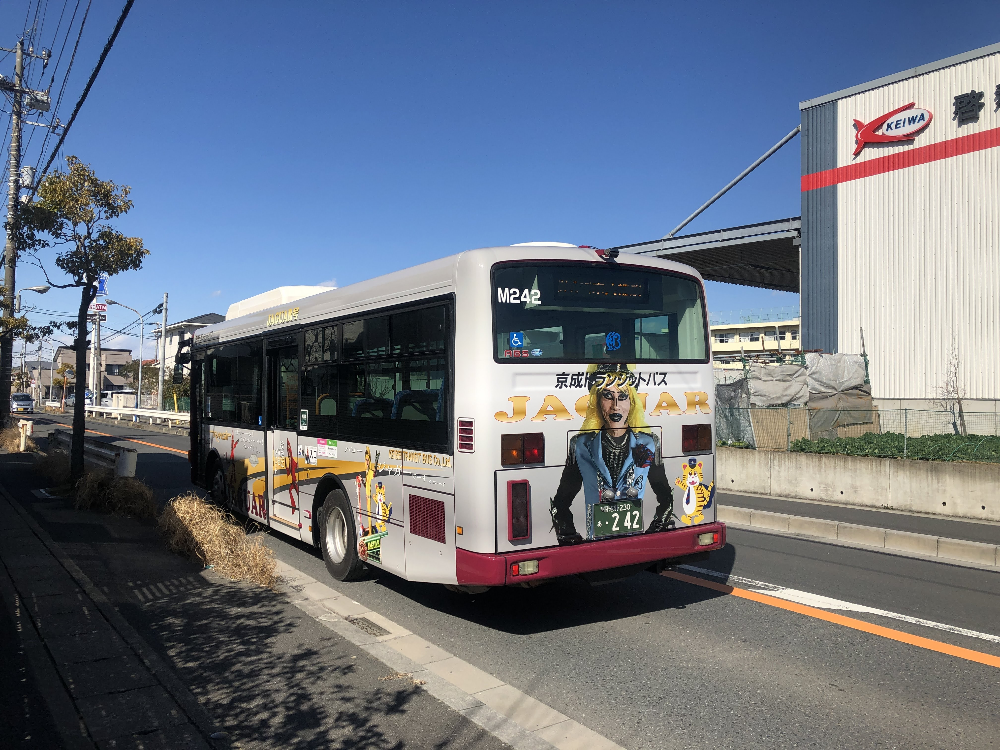
ジャガーさん号です。取材に行ったのはそれくらい前です。
それでなんですが...その......ここからあまりにも書くことがありません。
実は今回記事の間隔がここまで空いたのはそれが原因です。周囲はコンビニや倉庫ばかりであまり取材ができませんでした。
ですので今回は非常に少ないですが写真を見ていただこうと思います。どうぞ。
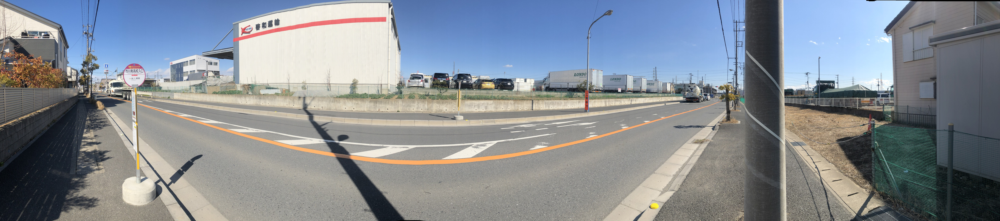
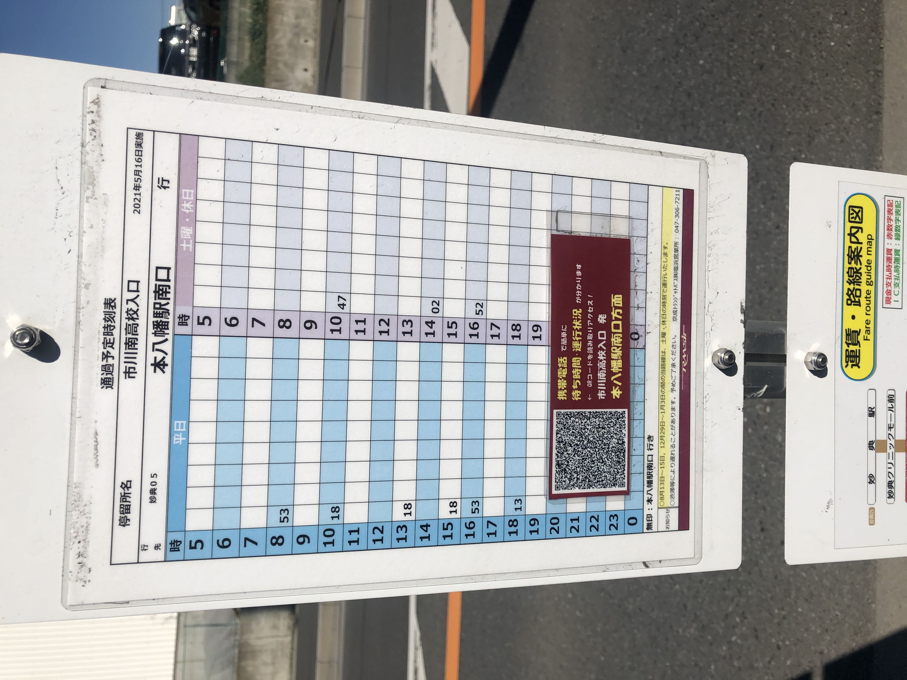
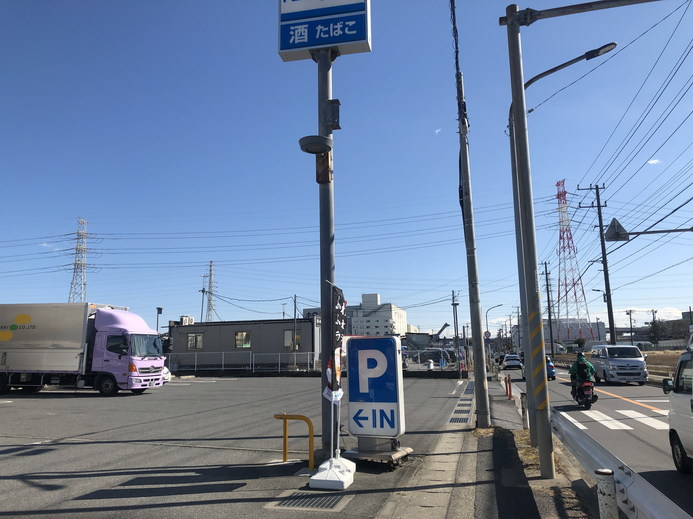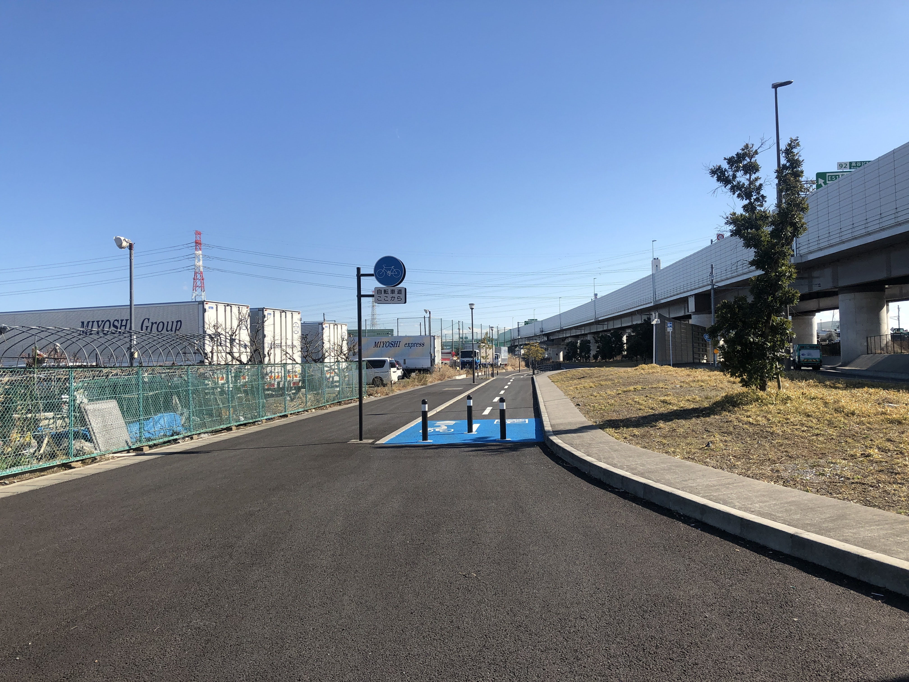
撮れるものがこれくらいしかなかったです。此処から先は妙典橋を渡るだけです。
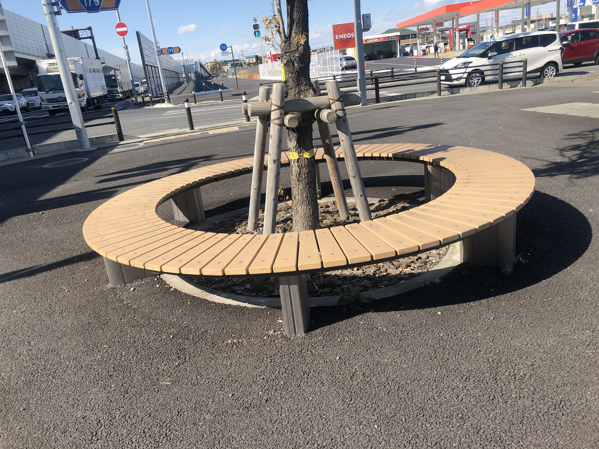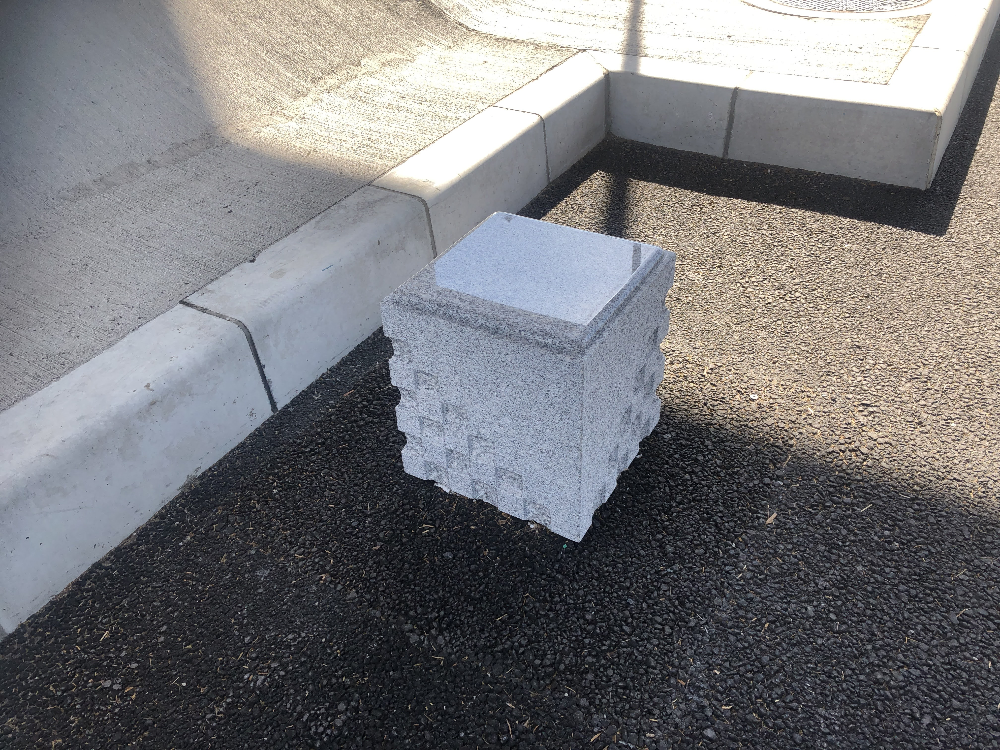
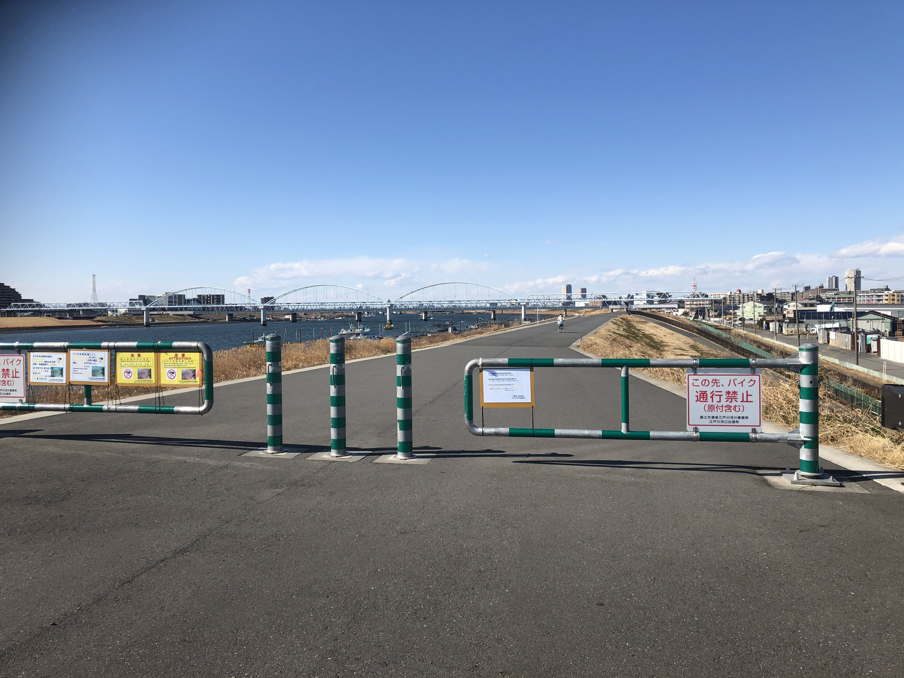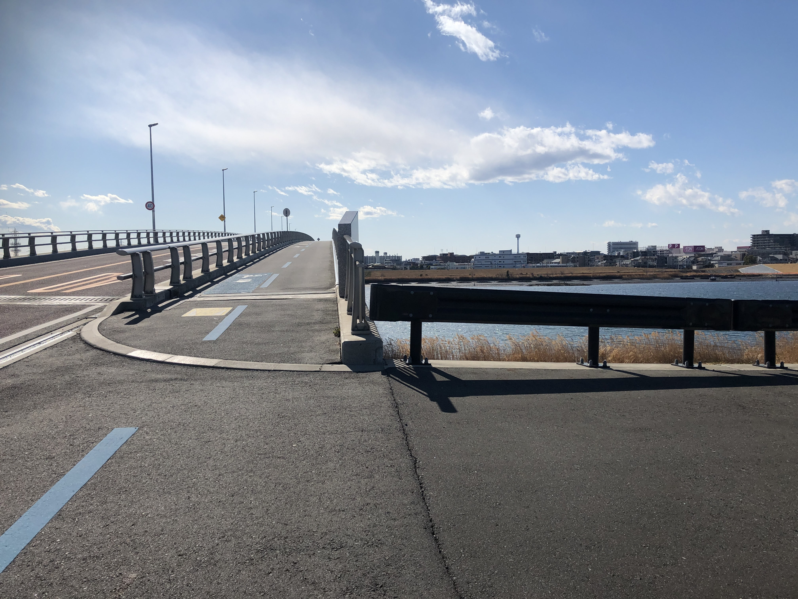
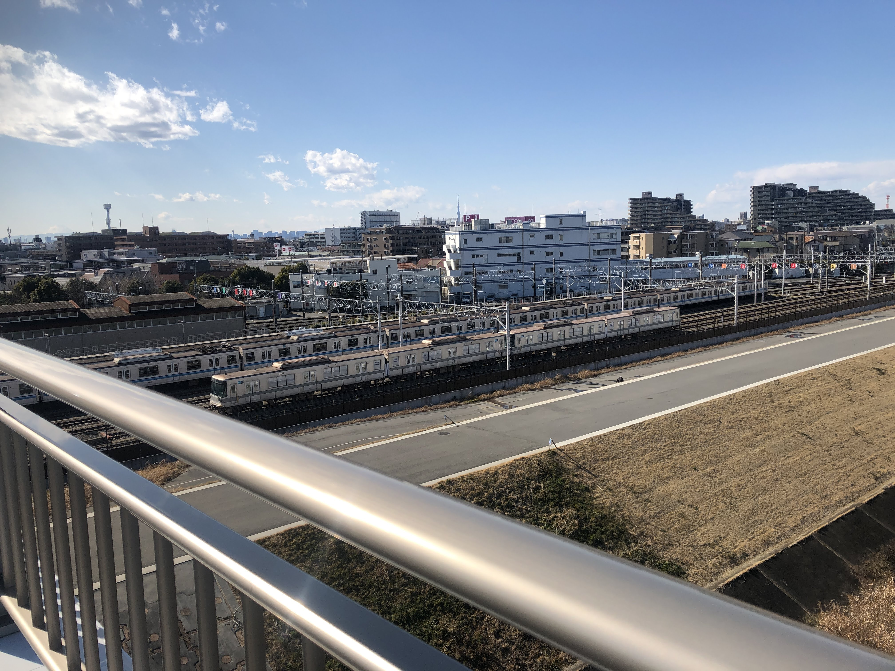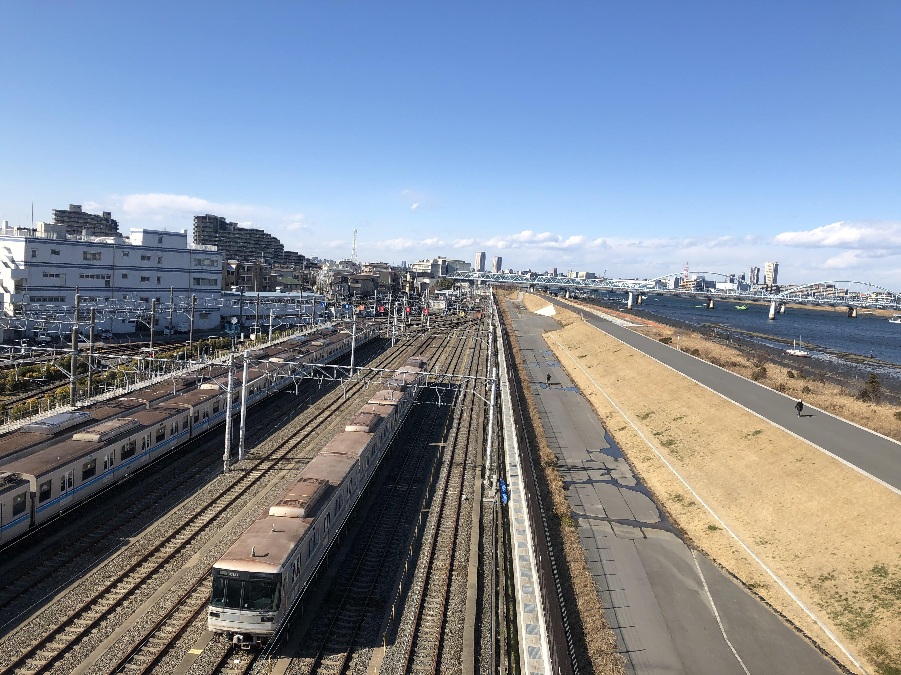
今日はここまでです。次回はもっとしっかりした記事を書けると思います。今回はすみませんでした。
少し先に倉庫さんに予定取りをして再取材もありかもしれませんね。